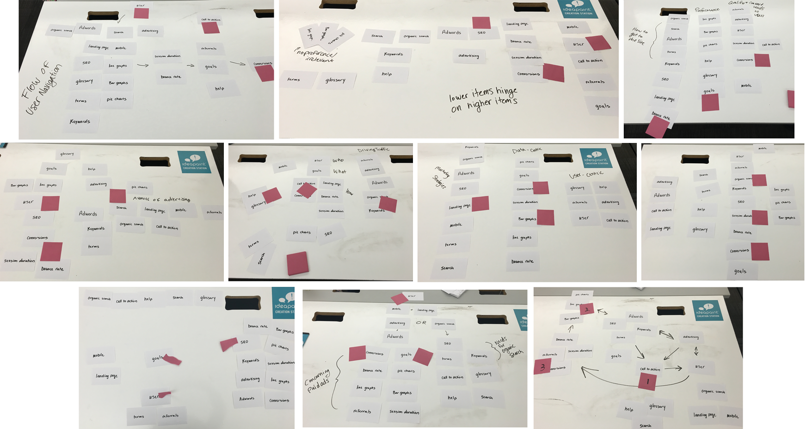

Assumptions
We believe this app will be useful for salespeople who find the extensive and advanced options of Google Analytics to be overwhelming and inaccessible. This app will relay the basic crucial statistics of website traffic and provide a simple overview of why the numbers matter and recommend solutions. This will be a tool that leverages sales by providing straightforward ways to show the effect of marketing tactics and SEO.
User Research: Card Sorting
In this exercise I wrote features and data that would be accessed and explained in the app on index cards. We got potential target-users(Sales and Marketing professionals) to organize the cards in whatever structure made sense to them. They then explained their choices and choose the 3 items that they felt were most important.

Results
This validated our assumptions of which metrics are most important and what tactics are linked to improving them.
'Conversions' were chosen 7/10 times for top priority and
'CTA' was commonly grouped with 'user' and or 'conversions'
I was asked by 3 participants during the exercise what 'bounce rate' is. Although we won't include it as a metric since it is very case-by-case in importance, it's good to be aware of so it might be included in the glossary.
Mixed results on the importance of graphs. Feedback varied from "I don't care about them, I want the numbers." to "Without data visualization how can you succinctly relay the information?".
Since we are creating an app to make analytics more digestable, charts and graphs are definitely a core feature. Though the desire to see just numbers and ratios which will be taken into consideration. Perhaps prominently displaying the numerical data on the charts.
There seems to be a split on whether chronology of the metrics(referrals/search to get to the site, session duration of being on the site, and conversion as the final step) or importance(conversions front and center because they tell you how well your end goal is being reached) is the best way to organize the app data. Going for sales, I believe importance in respect to meeting sales goals and checking how your marketing is will be the strongest way to structure the app.
An important thing I had missed in earlier designs was to include viewing metrics in comparison as a core feature. I had been worried about adding too much into the MVP but it was vital to giving more context to the data and therefore a core feature. We also developed a creative solution for viewing the graph of referrals where you view all of the different sites that are driving your traffic. With limited screen space I found it best to incorporate a scrollable bar graph. To optomize readability we positioned the graphs horizantally with the site names above them.